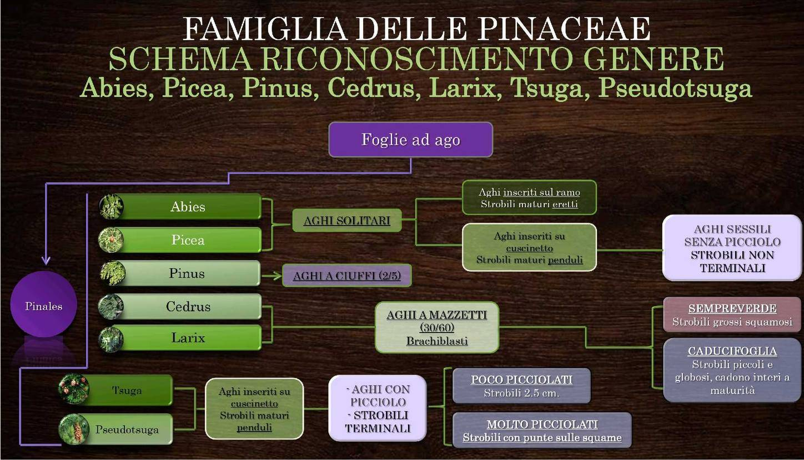

←
Chiave delle Pinaceae
7 generi: Abies, Picea, Pinus, Cedrus, Larix, Tsuga, Pseudotsuga
by Lollo ®2026 · Scheda Botanica PRO
Chiave
Generi
Ripasso
Glossario
Schema del corso
Ingrandisci
✕

Schema di partenza. Alcuni caratteri sono stati corretti nella chiave: vedi Glossario › Correzioni allo schema.
Slide del corso
✕
← Precedente
Successiva →